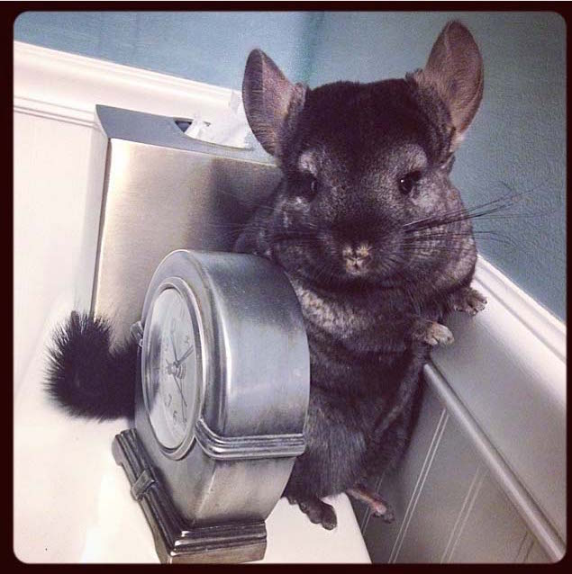

Typical Day for Lana
Lana has a pretty precise schedule. If anything doesn't go as plan she becomes a demon spawn. No matter what time of day it is, she will always manages to look cute as hell.
Morning
Lana prefers to wake up in the morning on the third level of her cage. If she finds herself on the first floor then she had a wild night with one of tiny stuffed animals she was given by her parents. Lana isn't much a morning person so she usually sits against the cage all cuddled up into herself for few hours. From time to time she would look around the room or watch Jessie put on make-up. Lana will have a couple strands of hay here and there and a few gulps of water but other than that her mornings are for her to chill and rest.

Afternoon
Lana sorta becomes a lot more active during the afternoon period. She'll jump from each levels of her cage to exercise; the main body-part she focuses on are her thighs. They are hefty and strong so she can achieve extraodinary airtime when jumping. Lana eats the most during the afternoon; she'll have her chinchilla pellets, hay, water and any pieces of papers or cardboard that is placed in her cage. Due to consuming a vast amount of food, she will also use the bathroom a lot. This is done in a plastic bin-like container or anywhere else. In the afternoon if Josh or Jessie is present, she enjoys being held and pet. At the same time, she also makes multiple attempts to escape the cluthes of her slave-humans. Some more rest is taken place during the end of the afternoon period.
Night
As soon as the sun perishes and the moon awakens from it's god forsaken slumber, the lord of all things evil and dead known as Lana begins to release her true power. Lana is very active during the night. So at night, if she's good or if her parents are feeling carelesss, she is released from her cage to roam around the roam where she is free to nibble and poop on anything that she desires. The roaming sessions usually last for forty-five minutes to an hour. During the time, lord Lana explores the wonders of her slaves' possessions. She also likes to jump up onto the bed and feed on wooden shelves. After much irritation, her slave humans spend fifteen to twenty minutes trying capture little Lana. Being put into her cage does not automatically mean that Lana is ready to calm down and sleep; no, she proceeds to wild out throughout the night occassionally sipping on some water. Lana feeds on the moon's aura to become the most powerful creature of the night.